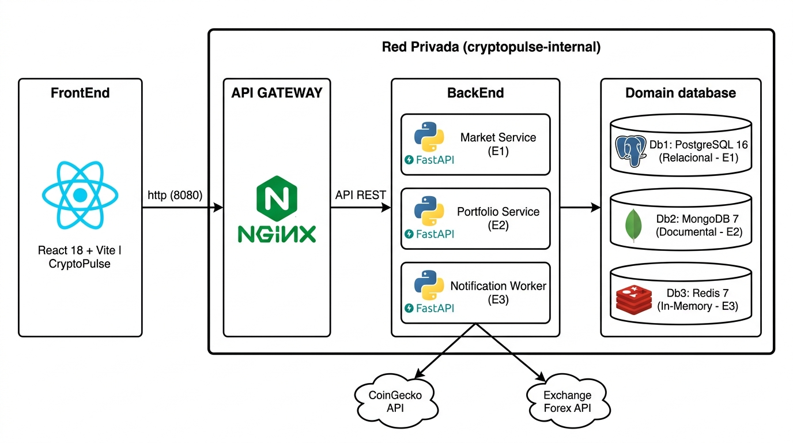

Diagrama de bloques distribuido: Gateway, Microservicios, Persistencia Poliglota y Red Privada

Perimetro Seguro & Arquitectura Base
Persistencia Poliglota & Balanceo
Resiliencia, Eventos & Observabilidad